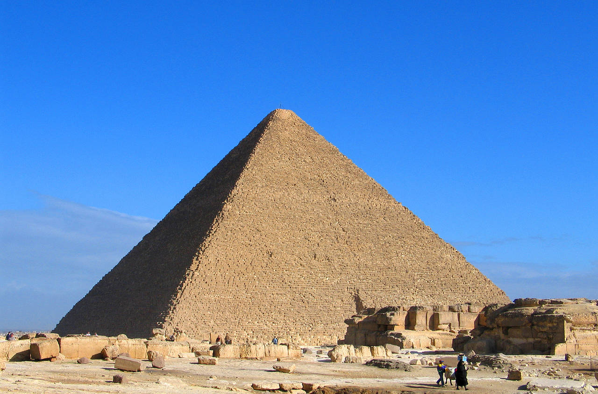

Cheopso piramidė

Cheopso piramidė, dar vadinama Didžiąja Gizos piramide, yra seniausia ir didžiausia iš trijų garsiųjų Gizos piramidžių Egipte. Ji buvo pastatyta IV dinastijos faraonui Cheopsui (Chufu) maždaug 2560 metais pr. m. e. ir yra vienintelis iki mūsų dienų išlikęs iš septynių pasaulio stebuklų.
Pradinis šios piramidės aukštis siekė apie 146,6 metro, todėl beveik keturis tūkstančius metų tai buvo aukščiausias žmogaus sukurtas statinys pasaulyje. Statybai buvo sunaudota apie 2,3 milijono didelių akmens luitų, kurių kiekvienas svėrė vidutiniškai po 2,5 tonos.
Šio milžiniško statinio paskirtis buvo apsaugoti faraono kūną po mirties ir užtikrinti jam amžinąjį gyvenimą bei kelionę į pomirtinį pasaulį. Piramidės viduje yra keletas slaptų koridorių, ventiliacijos šachtų ir pagrindinė Karaliaus menė, o jos tikslus pastatymo metodas iki šiol kelia diskusijas tarp mokslininkų.